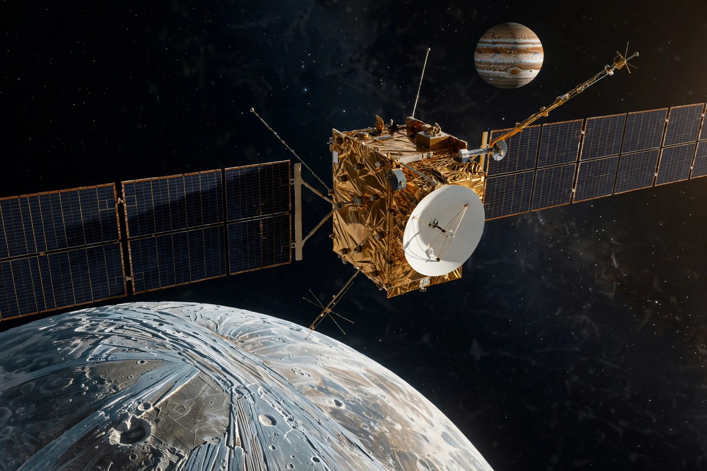

[Image: Juice spacecraft with large solar wings approaching Ganymede, Jupiter behind]
The journey
Juice's eight-year cruise uses gravity assists at Earth, Venus and Earth again to reach Jupiter in 2031 (as planned). In August 2024 it performed the first-ever lunar–Earth double gravity assist, flying past the Moon then Earth days apart, as recalled.
Science goals
Juice carries ten instruments — cameras, spectrometers, a radar to probe beneath the ice, a magnetometer and more — to determine whether the icy moons hide global oceans beneath their crusts, and whether those oceans could be habitable.
Ganymede finale
The mission culminates in orbit around Ganymede, the solar system's largest moon and the only one known to generate its own magnetic field, before a planned end with impact on its surface.